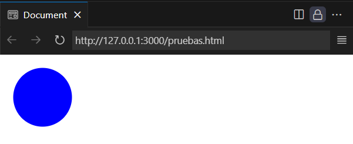
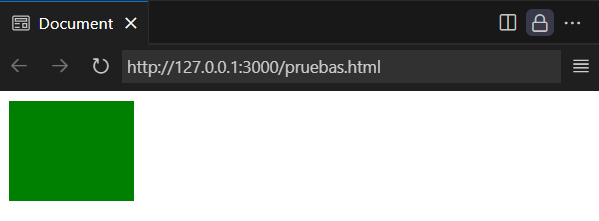
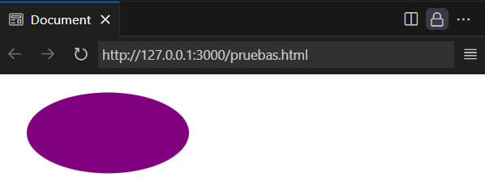

Sección SVG - Web4U

SVG, o Gráficos Vectoriales Escalables, es un formato de archivo basado en XML para imágenes vectoriales bidimensionales, que permite escalar gráficos sin pérdida de calidad.
A diferencia de los formatos rasterizados como PNG o JPG, SVG utiliza descripciones matemáticas para definir formas y líneas, lo que lo hace ideal para logotipos,
iconos e ilustraciones que deben adaptarse a diferentes tamaños y resoluciones.
Características principales de SVG:
Escalabilidad
SVG permite ampliar o reducir imágenes sin afectar la calidad, lo que es crucial para sitios web responsivos.
Basado en texto
SVG utiliza código XML, lo que significa que los archivos son textuales y pueden ser editados con editores de texto o software de diseño vectorial.
Tamaño de archivo pequeño:
Normalmente, los archivos SVG son más pequeños que los formatos rasterizados equivalentes, lo que contribuye a tiempos de carga más rápidos en páginas web.
Compatibilidad con navegadores:
La mayoría de los navegadores modernos son compatibles con SVG, lo que asegura que las imágenes se muestren correctamente en diferentes plataformas.
Edición:
SVG permite la edición fácil del código XML, lo que facilita la manipulación y modificación de las imágenes.
Ventajas de usar SVG en diseño web:
Mejora el rendimiento del sitio web:
Los archivos SVG más pequeños y la capacidad de escalado sin pérdida de calidad contribuyen a una mejor experiencia de usuario y tiempos de carga más rápidos.
Adaptabilidad:
SVG se adapta a diferentes resoluciones de pantalla sin comprometer la calidad de la imagen, lo que es esencial para sitios web responsivos.
SEO:
Como los archivos SVG se basan en código XML, los motores de búsqueda pueden leer el contenido textual de las imágenes, lo que puede ayudar a mejorar la visibilidad del sitio web.
Animaciones:
SVG permite la creación de animaciones y efectos visuales, lo que lo convierte en una opción versátil para diseños web modernos.
En resumen, SVG es un formato de imagen versátil y eficiente que ofrece numerosas ventajas en el diseño web, especialmente en términos de escalabilidad, rendimiento y adaptabilidad
a diferentes dispositivos y resoluciones.
La etiqueta <svg> se utiliza como contenedor para gráficos vectoriales escalables. Dentro de ella se colocan otras etiquetas como <circle>, <rect>, <line>, etc.
Ejemplo:
<svg width="100" height="100">
<circle cx="50" cy="50" r="40" fill="red" />
</svg>
En este caso estamos definiendo un contenedor y dentro de él se coloca un circulo relleno de rojo
Resultado en el navegador:
Imagen capturada del navegador

Más información: W3Schools | Descargar PDF
La etiqueta <circle> se utiliza dentro de SVG para dibujar un círculo.
Entre los atributos que pueden acompañar a esta etiqueta tenemos:
El atributo r el cual es obligatorio poner y define el radio del círculo
Los atributos (cx, cy) no son obligatorios, identifican las coordenadas donde tendrá su cento el círculo. En caso de omitirlo se considerará el centro(0,0).
El atributo fill, el cual rellena el círculo con el color que le asignemos.
Ejemplo:
<svg width="100" height="100">
<circle cx="50" cy="50" r="40" fill="blue" />
</svg>
Resultado en el navegador:
Imagen capturada del navegador
Más información: W3Schools | Descargar PDF
La etiqueta <rect> se usa para dibujar rectángulos o cuadrados en SVG.
Los atributos obligatorios que deben acompañar a la definición de todo rectángulo son width y height que definen el ancho y el alto del rectángulo.
Ejemplo:
<svg width="120" height="100">
<rect width="100" height="80" fill="green" />
</svg>
Resultado en el navegador:
Imagen capturada del navegador
Más información: W3Schools | Descargar PDF
La etiqueta <line> se emplea para dibujar una línea recta dentro de un SVG.
Entre los atributos que deben acompañar obligatoriamente a la etiqueta <line> tenemos:
x1 e y1 definen las coordenadas de inicio de la recta.
x2 e y2 definen las coordenadas donde finaliza la recta.
Ejemplo:
<svg width="100" height="100">
<line x1="0" y1="0" x2="100" y2="100" stroke="black" stroke-width="2" />
</svg>
Resultado en el navegador:
Imagen capturada del navegador

Más información: W3Schools | Descargar PDF
La etiqueta <ellipse> se usa para dibujar una elipse o círculo achatado.
Esta etiqueta está estrechamente relacionada con la etiqueta <circle>.
En este caso para definir el radio de la elipse se requiere de dos atributos que son los que le dan esa forma achatada:
cx define el radio horizontal y cy define el radio vertical.
rx y ry definen las coordenadas que se tomarán como centro para dibujar la elipse.
Ejemplo:
<svg width="200" height="100">
<ellipse cx="100" cy="50" rx="80" ry="40" fill="purple" />
</svg>
Resultado en el navegador:
Imagen capturada del navegador
Más información: W3Schools | Descargar PDF